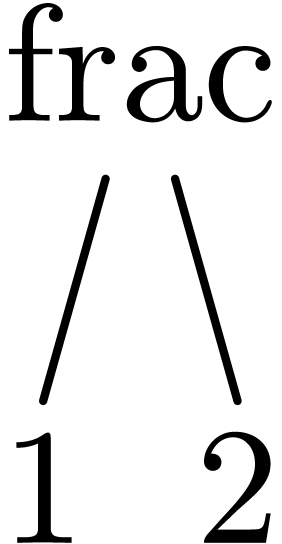
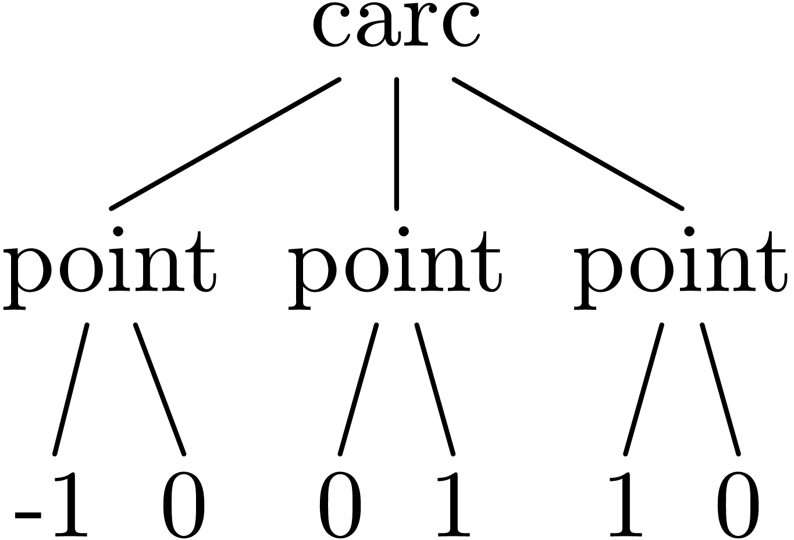

|
叶田鑫：代码缺少注释
张佳：默认快捷键绑定到对应平台 1.2.0
糖豆儿：line break
Scheme] |
(define (plot l) (stree->tree l)) |
Scheme] |
(plot '(frac 1 2)) |
1
2
Scheme] |
(define (point x y) ‘(point ,(number->string x) ,(number->string y))) |
Scheme] |
(point 1 1) |
Scheme] |
(plot ‘(point "1" "1")) |
Scheme] |
(plot (point 1 1)) |
Scheme] |
(define (point.x point) (string->number (list-ref point 1))) |
Scheme] |
(define (point.y point) (string->number (list-ref point 2))) |
Scheme] |
(point.y (point 1 2)) |
Scheme] |
(define (line . points)
(cond ((nlist? points) ‘())
((== points '()) ‘())
(else ‘(line ,@points)))) |
Scheme] |
(plot (line (point 0 0) (point 1 1))) |
Scheme] |
(define (rectangle leftdown rightup)
(let ((leftup (point (point.x leftdown) (point.y rightup)))
(rightdown (point (point.x rightup) (point.y leftdown))))
‘(cline ,leftdown ,leftup ,rightup ,rightdown))) |
Scheme] |
(define (circle center radius)
(let ((p1 (point (- (point.x center) radius) (point.y center)))
(p2 (point (point.x center) (+ (point.y center) radius)))
(p3 (point (+ (point.x center) radius) (point.y center))))
‘(carc ,p1 ,p2 ,p3))) |
Scheme] |
(plot (circle (point 0 0) 1)) |
Scheme] |
(circle (point 0 0) 1) |
| Scheme] |

(begin
(define (plot g) (stree->tree g))
(plot '(frac 1 2)))

(begin
(define (plot g) (stree->tree g))
(define (point x y)
‘(point ,(number->string x) ,(number->string y)))
(define (point.x point)
(string->number (list-ref point 1)))
(define (point.y point)
(string->number (list-ref point 2)))
(define (circle center radius)
(let ((p1 (point (- (point.x center) radius) (point.y center)))
(p2 (point (point.x center) (+ (point.y center) radius)))
(p3 (point (+ (point.x center) radius) (point.y center))))
‘(graphics (carc ,p1 ,p2 ,p3))))
(plot (circle (point 0 0) 1)))
Eukleides syntax to stree
Use ChatGPT to generate the Eukleides syntax